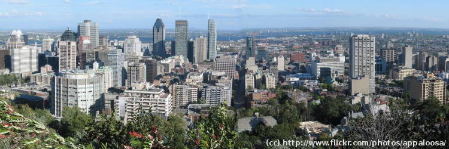
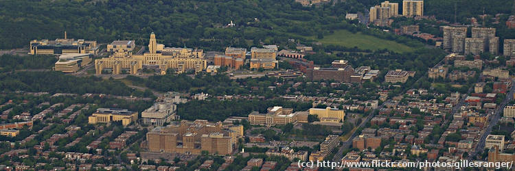
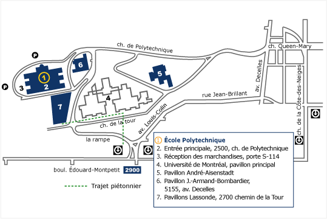

Le Libre Graphics Meeting 2009 aura lieu à École Polytechnique de Montréal, Québec, Canada.
Montréal est une ville internationale. Les accès à la ville sont aussi nombreux que les moyens de s'y rendre. Montréal est desservie par un aéroport international situé à 20 minutes du centre-ville ainsi que par un réseau ferroviaire et autoroutier. Vous avez l'embarras du choix. Le LGM se voulant un événement « Carbone neutre » nous vous encourageons à utiliser les transports en commun.
Content

Comment arriver
Visiter le Canada

Le Canada exige des visiteurs en provenance de plusieurs pays, en plus du passeport, un visa valide. Nous vous suggérons de consulter la liste de ces pays dans le site web du Canada.
Si pour obtenir votre visa, vous avez beosoin d'une lettre d'invitation de la part des organisateurs de LGM, veuillez s'il-vous-plaît contacter directement Louis Desjardins (louis.desjardins at gmail.com).
Soyez prévoyant. L'obtention de votre visa et de vos documents de voyage peut prendre un certain temps. Nous n'avons aucun contrôle là-dessus.
Avion

Aéroport international Montréal-Trudeau YUL (Liste des compagnies aériennes desservant Montréal).
De l'aéroport au LGM avec la navette
L'Aérobus est un service de navette entre Montréal - Pierre Elliott Trudeau International Airport et la station centrale d'autubus de Montréal (Terminus Berri).
Les billets pour l'Aérobus sont en vente au kiosque de l'aéroport.
La station centrale de bus est directement reliée avec la station Beri-UQAM du métro.
Veuillez consulter la mappe du métro.
Nous vous conseillons d'acheter vos billets ou abonnements pour les transports publics à la station Berri-UQAM. Vous allez économiser de l'argent et du temps. Les abonnements (hebdomadaires ou mensuels) vous permettent une utilisation illimité des bus et du métro pendant leur durée de validité: vous les trouvez dans le kiosque de chaque station de métro (mais pas à l'aéroport) (Tarifs du réseau de transports publics de Montréal).
Venir au LGM
Si vous voyagez en avion, vous allez probablement:
- Prendre la navette jusqu'au centre de Montréal : 40-45 min
- Descendre au terminal du bus et descendre au niveau du métro. Acheter le billet ou abonnement (cf. farifs) : 5 min
- Prendre le métro jusqu'à l'arrêt Laurier (direction Montmorency de la ligne orange) : 8 min
- Attendre les bus pour 5 à 10 minutes.
- Prendre le bus 51 jusqu'à l'arrêt Edouard-Montpetit/Stirling: 20 min
- Traverser la route et jusqu'à la résidence et faire le check in : 5 min
- Monter dans votre chambre : 2 min
- Vous relaxe ! Déballer les valises. Prendre une douche. Connecter l'ordinateur portable. Dire bonjour aux amis !
De l'aéroport jusqu'à votre chambre en 90 minutes.
Le retour à la maison
- Relaxez-vous ! Prenez une douche. Dites aurevoire à vos amis. Debranchez le laptop. Fermez les valises.
- Descendez, faite le check out, rendez la clé : 5 min
- Prenez le bus 51 (ne traversez pas la route!) jusqu'à l'arrêt Laurier : 20 min
- Attendez le métro : 5 min
- Prenez le métro jusqu'à Berri-UQAM (direction Côte-Vertu) : 8 min
- Montez les escaliers vers la station de bus et achetez votre billet pour la navette : 10 min
- Prenez la navette pour l'aéroport : 40-45 min
- Descendez à l'aéroport et dites aurevoir à Montréal!
De votre chambre jusqu'à l'aéroport en 90 minutes.
De l'aéroport au LGM en taxi
Le temps de parcours en taxi dépend de votre heure d'arrivée: d'environ 25 minutes en dehors des heures de pointe à plus d'une heure entre 15 heures et 18 heures. Il y a un tarif forfétaire.
Un conseil : vous pouvez essayer de trouver d'autres passager et partager avec eux le prix du taxi.
Autobus

Le terminus d'autobus (Station centrale d'autobus Montréal) est situé au centre-ville de Montréal :
505 boul. de Maisonneuve Est
Montréal
Téléphone: +1-514-842-2281
Accès direct au réseau du métro à partir du terminus d'autobus, métro Berri-UQAM.
Train

La gare centrale est située en plein coeur de la ville au 895, rue de la Gauchetière Ouest. La Gare centrale est adjacente aux stations de métro Bonaventure (ligne orange) et McGill (ligne verte).
Auto

Plusieurs autoroutes mènent à Montréal. Que vous veniez du Maine, du Vermont, de l'état de New York, de l'Ontario, des Maritimes ou de partout au Québec, les accès routiers à Montréal sont nombreux. En provenance du sud c'est l'autoroute 15, en provenance de l'est ou de l'ouest ce sont les autoroutes 10, 20, 30, 40 ou 50.
Il est possible de parquer au Polytechnique et au Studios Hôtel (informations plus détaillées sur la disponibilité et le prix suivront).
Le lieu de la conférence

École Polytechnique de Montréal
2900, boul. Édouard-Montpetit
Campus de l'Université de Montréal
2500, chemin de Polytechnique
Montréal (Québec) H3T 1J4
Le plan du campus:
Hébergement
Les Studios Hôtel
Nous avons obtenu un tarif préférentiel pour les participants du LGM dans les résidences étudiantes situées sur le campus, à deux pas de l'École Polytechnique. Votre lit sera à moins de 5 minutes à pied de l'auditorium où se tiendra le LGM! Toutes les chambres ont un accès direct à Internet.
Des chambres au Les Studios Hôtel sont disponibles à un prix spécial pour le LGM avec accès à internet et toute taxe comprise (prix en CAD, par chambre et valables pour les reservations faites jusqu'au 6 avril 2009).
 | Une nuit | 4 nuits et 4 petit déjeuners |
|---|---|---|
| Chambre Solo | CAD $46 | CAD $208 |
| Chambre Duo | CAD $58 | CAD $280 |
| Suite Confort | CAD $98 | CAD $440 |
| Chambre "multi" pour 3 personnes | CAD $72 | CAD $360 |
| Pour plus de détails, lisez la brochure du Studios Hôtel ou visitez la page web du Studios Hôtel | ||
Attention: chacun est responsable de réserver sa chambre. Les organisateurs du LGM se chargent uniquement de négocier un meilleur prix et de grouper les chambres.

Les Studios Hôtel
Université de Montréal
2450 boul. Édouard-Montpetit
Montréal, QC, H3T 1J4
info [à] studioshotel.ca
Téléphone : +1 514 343-8006
Fax : +1 514 343-8076
Réservation en ligne : Veuillez sélectionner l'événement LGM 2009 au moment de faire votre réservation. Ne sélectionnez aucun forfait : nous bénéficions d'une tarification plus avantageuse que n'importe quel forfait offert.
De plus, des salles de lavage sont disponibles pour tous. Il y a 10 chambres par étage plus un Salon ou une Suite confort (en alternance d'un étage à l'autre). Le Salon peut servir de salle de réunion. Les participants au LGM auront aussi accès à 3 autres salles de réunion dans l'édifice adjacent.
Nous vous suggérons de réserver votre chambre avant le 6 avril. Après cette date, des chambres seront disponibles mais il sera plus difficile de grouper les participants sur un ou deux étages.
Hôtels à Montréal
Si vous désirez loger à l'extérieur du campus, pas de souci! Montréal regorge d'hôtels de toutes catégories et à tous les prix. Nous ne ferons aucune recommandation à ce sujet. Nous vous suggérons cependant de rechercher les hôtels situés au centre-ville (à proximité des stations de métro Place-des-Arts ou Berri-UQAM par exemple) ou dans le quartier Plateau Mont-Royal (stations de métro Sherbrooke, Mont-Royal, Laurier) pour un accès plus facile au site du LGM. L'École Polytechnique est accessible en métro, stations Édouard-Montpetit ou Université de Montréal (ligne bleue) ou en autobus, ligne 51 au métro Laurier (ligne orange)